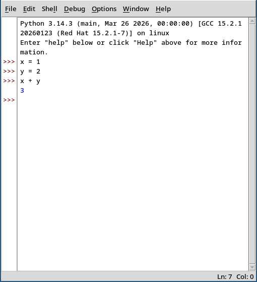
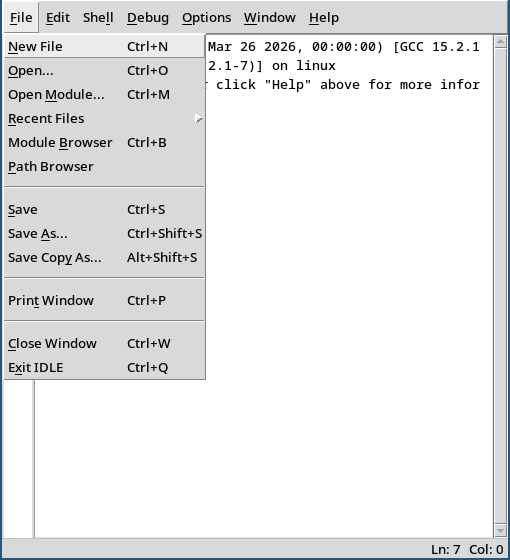
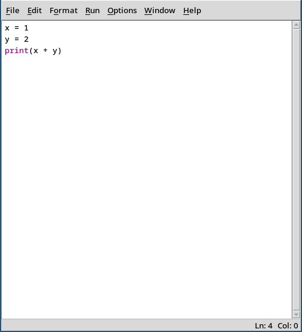
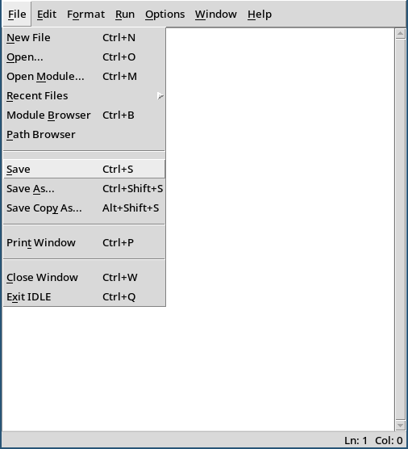
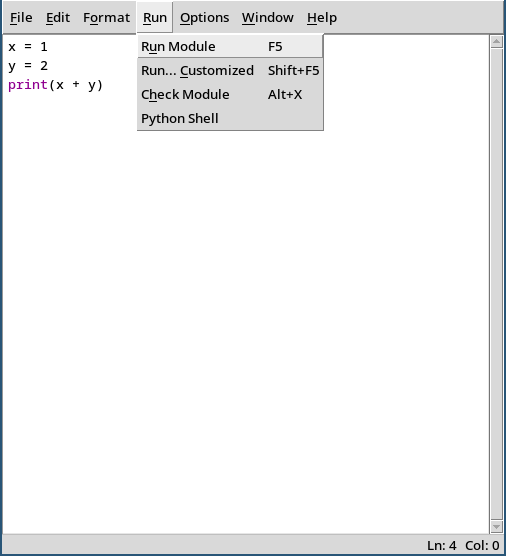
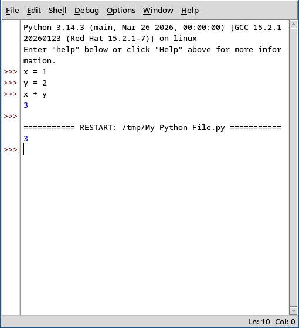

Python Crash Course
This short guide is meant to get you writing simple Python programs as quickly as possible. It should get you familiar with the basics of programming and how to fix errors in your code. Once you've gone through the basics, try the practice exercises to test your understanding.
Installing Python
On Mac, go to python.org/downloads, click the yellow download button, run the downloaded file, and follow the installer. On Windows, do exactly the same but check "add python.exe to PATH" at the bottom of the first screen of the installer
Writing Your First Program
Python comes with a program called IDLE that covers the essentials so you can start programming immediately. Search for "IDLE" in the Start Menu on Windows or in Applications on Mac and run the program. You'll see something like this:

This is the shell where you can type and run lines of python code and immediately see the result. In the example above, x = 1 and y = 2 don't show a result (these lines do not produce values) and x + y has the result 3 .
The shell is useful for quick tests, but for real programs you want to write them in separate files you store on your computer. Create a new file:

Write some code (we'll see what print does very soon):

Save the file using a filename that ends in .py:

and run your program (here you can see that F5 is a shortcut key to run your program. If that doesn't work for you, try to hold down the Fn key when you press F5)

This runs your program and writes any output or error messages to the shell:

And now you see what print does; it writes text to the output!
Python Basics
Anything after a # is a comment — Python ignores it.
Use comments to explain tricky parts of your code, or to temporarily "remove" a line without deleting it. We will use comments to show what our examples below print:
# This is a comment
print("Hello!") # Hello!
print(2 + 3) # 5
who = "Alice"
print("Hello, " + who) # Hello, Alice
who = "Bob"
print("Hello, " + who) # Hello, Bob
Variables — In the example above, who is what we call a variable. It is just an identifier (a name) that we use to refer to a value, and we can change the value by assigning a new one using the equals sign. Note that 'who' is just a name I chose. I could've chosen any name, except a few. Choose names that makes it easy to understand your code, like 'who' or 'name' instead of 'w' or 'n'.
Types — In Python, every value has a type. The most common ones are
- integers — whole numbers like
0,42,-7 - floating point numbers — decimals like
3.14,0.5 - strings — texts like
"hello","42" - booleans —
TrueorFalse
int, float, str, and bool instead.
Knowing the type of your values is very important, because the string "42" and the int 42 are completely different, and so is the string "True" and the bool True. In Python, 1 + 2 is 3 and "1" + "2" is "12" (this last one is called concatenation). If you try to run "1" + 2, Python will complain that you can't concatenate a string and an int.
If you want to check the type of anything (such as a variable) you can use type().
who = "Alice"
type_of_who = type(who)
print(type_of_who) # <class 'str'> (don't worry about the 'class')
Operators — Here are the most common operations you can do with different types:
# Arithmetic (works on ints and floats)
print(7 + 3) # 10 addition
print(7 - 3) # 4 subtraction
print(7 * 3) # 21 multiplication
print(7 / 3) # 2.33 division (always gives a float!)
print(7 // 3) # 2 integer division (rounds down)
print(7 % 3) # 1 remainder (called "modulo")
print(2 ** 3) # 8 exponentiation (2 to the power of 3)
# Comparison (gives you a bool)
print(3 == 3) # True equal
print(3 != 4) # True not equal
print(3 < 5) # True less than
print(3 > 5) # False greater than
print(3 <= 3) # True less than or equal
print(3 >= 5) # False greater than or equal
# Logical (combine bools)
print(True and False) # False both must be true
print(True or False) # True at least one must be true
print(not True) # False flips the value
# Strings
print("Hello" + " " + "world") # Hello world (concatenation)
print("ha" * 3) # hahaha (repetition)Operator precedence — Just like in math, some operators are evaluated before others. Multiplication and division happen before addition and subtraction:
print(2 + 3 * 4) # 14 (not 20!)
print((2 + 3) * 4) # 20 (parentheses first)When in doubt, use parentheses to make your intent clear. Writing (2 + 3) * 4 is easier to read than relying on anyone remembering whether * or + goes first. The full precedence order (highest to lowest) is: **, then * / // %, then + -, then comparisons (== < etc.), then not, then and, then or.
Reading input — Most programs need to get information from the user. The input() function asks the user to type something and gives you back what they typed:
name = input("What is your name? ")
print("Hello, " + name) # If they typed "Alice", prints: Hello, AliceThe input() function always gives you a string, even if the user types a number. To do math with the output you can convert it using the int() or float() functions:
age_text = input("How old are you? ") # User types "15"
print(age_text + 10) # Error! Can't add string and int
age = int(input("How old are you? ")) # User types "15"
print(age + 10) # 25Conditionals — This is when programs begin to be interesting. You can check conditions and run different code depending on whether they're true or false:
temperature = 25
if temperature > 20:
print("Warm") # Warm (this is what runs)
else:
print("Not warm") # Only runs if the condition was falseIf you want to check multiple conditions, you can nest if statements inside the else:
temperature = 15
if temperature > 20:
print("Warm")
else:
if temperature > 10:
print("Cool") # Cool (this is what runs)
else:
print("Cold")This pattern is so common that Python has a shorthand for it: elif (short for "else if"). These two programs do exactly the same thing:
# With nested if/else:
if temperature > 20:
print("Warm")
else:
if temperature > 10:
print("Cool")
else:
print("Cold")
# With elif (much cleaner!):
if temperature > 20:
print("Warm")
elif temperature > 10:
print("Cool")
else:
print("Cold")You can have as many elif branches as you want. Python checks them top to bottom and runs the first one that's true, then skips the rest.
Loops and Lists
While loops — The while loop keeps running as long as the condition is true:
count = 0
while count < 5:
print(count) # Prints 0, then 1, then 2, then 3, then 4
count = count + 1 # Don't forget this! Otherwise it loops forever
print("Done") # Prints 'Done'
Lists — A list is an ordered collection of values. You create one with square brackets:
fruits = ["apple", "banana", "cherry"]
print(fruits[0]) # apple (first element)
print(fruits[1]) # banana (second element)
print(fruits[2]) # cherry (third element)
print(len(fruits)) # 3 (number of elements)Notice that the first element is at position 0, not 1. This is called zero-indexing.
You can add elements to a list with append() and change existing elements by assigning to a position:
fruits.append("date") # ["apple", "banana", "cherry", "date"]
fruits[0] = "avocado" # ["avocado", "banana", "cherry", "date"]
print(len(fruits)) # 4Iterating over a list — You can use a while loop to go through every element:
fruits = ["apple", "banana", "cherry"]
i = 0
while i < len(fruits):
print(fruits[i])
i = i + 1This prints each fruit on its own line. The variable i counts from 0 up to (but not including) the length of the list, so fruits[i] hits every element in order.
Functions
A function is a way to package up code so you can reuse it. You define a function like this:
def greet(name):
print("Hello, " + name)
greet("Alice") # Hello, Alice
greet("Bob") # Hello, Bob The variable name in the parentheses is called a parameter — it's a placeholder that gets filled in with whatever value you pass when you call the function. When we called greet("Alice"), the parameter name became "Alice" inside the function. This way we don't have to code multiple times if we want to use it on multiple different values.
In Svinesti we have provided you with six functions in addition to what Python has by default: move(), turnLeft(), turnRight(), isRed(), isGreen(), and isBlue(). These functions don't take any arguments, which is why the parentheses are empty.
Functions can return values using return:
def add(a, b):
return a + b
result = add(3, 5)
print(result) # 8The difference between print and return confuses many beginners. print shows something on the screen. return gives a value back to whoever called the function. You can use that value in calculations, store it in a variable, pass it to other functions, etc. Most functions you write will use return, not print.
Debugging
When something goes wrong in your program, we say that your program has a bug. Finding and fixing this mistake is called debugging, and it is one of the harder parts of programming. In Svinesti you can immediately see when something goes wrong since you are watching the pig carry out your instructions in real time. In regular programs, you're not so lucky. Instead, you'll use print() to look inside your program and see what's actually happening.
Here's a common debugging scenario. You write a program that's supposed to add up the numbers 0 through 4 (which should give you 10), but it gives you 4 instead. What went wrong?
total = 0
i = 0
while i < 5:
total = i
i = i + 1
print(total) # 4 (wrong! should be 10)To figure it out, add a print() statement inside the loop to see what's happening each step:
total = 0
i = 0
while i < 5:
print("i is", i, "total is", total)
total = i
i = i + 1
print(total)This prints:
i is 0 total is 0
i is 1 total is 0
i is 2 total is 1
i is 3 total is 2
i is 4 total is 3
4Now you can see the problem: total = i replaces the total with i instead of adding i to it. The fix is total = total + i.
This is the basic debugging strategy: when your program does something wrong, add print() statements to check what your variables actually contain at different points. Sometimes its useful to use input() to make the program pause while you think about what was just printed. The program will wait for your input, and continue running when you hit the enter key.
The challenge with this approach is finding out what to print to narrow down the search without getting too much information. If you print too much, it is going to be difficult to understand what is happening.
Common Mistakes
Here are the mistakes that trip up everyone when they're learning Python. If you see an error you don't understand, check this list first:
Forgetting the colon — if, elif, else, while, for, and def all need a colon at the end of the line:
# Wrong:
if x > 5
print("big")
# Right:
if x > 5:
print("big")Using = when you meant == — One equals sign (=) assigns a value to a variable. Two equals signs (==) check if two things are equal:
x = 5 # Sets x to 5
if x == 5: # Checks if x equals 5
print("x is five")If you write if x = 5: Python will give you a SyntaxError. In some other languages this mistake doesn't cause an error, which results in bugs that can be very hard to find.
Indentation errors — Python uses indentation (the spaces at the start of a line) to figure out which lines belong together. Every line in the same block must be indented by exactly the same amount:
# Wrong - second line isn't indented:
if x > 5:
print("big")
# Wrong - inconsistent indentation:
if x > 5:
print("big")
print("number") # Too many spaces!
# Right:
if x > 5:
print("big")
print("number")Use four spaces for each level of indentation. Don't use tabs, and don't mix tabs and spaces — that causes errors that are very hard to spot.
Unmatched parentheses — Every opening parenthesis needs a closing one. This is especially easy to mess up when you nest function calls like int(input("age? ")):
# Wrong - missing closing parenthesis:
age = int(input("How old are you? ")
print(age + 10)
# Wrong - extra closing parenthesis:
print("hello"))
# Right:
age = int(input("How old are you? "))
print("hello")Count the parentheses: every ( needs exactly one ). IDLE helps with this — when you type a closing parenthesis, it briefly highlights the opening one it matches.
Forgetting that input() gives you text — This one catches everyone at least once:
age = input("How old are you? ")
print(age + 10) # Error! Can't add string and intEven if the user types a number, input() gives you text. Wrap it in int() to convert it: age = int(input("How old are you? "))
Infinite loops — In Svinesti, if your loop runs for too long the system stops it automatically. On your own computer, the program just freezes. Press Ctrl+C in the shell to force it to stop. If that doesn't work, close IDLE and reopen it.
# This loop never ends because count never changes:
count = 0
while count < 5:
print(count)
# Forgot: count = count + 1Reading Error Messages
When something goes wrong, Python's error messages give you lots of useful information that helps you in debugging.
Traceback (most recent call last):
File "my_program.py", line 3, in <module>
print(greeting)
^^^^^^^^
NameError: name 'greeting' is not definedRead error messages from the bottom up:
- Last line tells you what went wrong:
NameError: name 'greeting' is not defined— you used a variable that doesn't exist. Probably a typo. - The caret line (the
^^^^^^^^) points to where Python got confused. - The line of code above that shows what you wrote:
print(greeting) - The file and line number:
File "my_program.py", line 3— tells you exactly where to look.
This information is very helpful, but not always bulletproof. For example, Python tells you the line number where the error happened, but the cause for the error might be on a different line, such as forgetting to use int() to convert the input() to a number.
Here are the most common error types you'll see:
SyntaxError — Your code isn't valid Python. Usually means you forgot a colon, have an unmatched parenthesis, or have a typo in a keyword (those special words like if and while):
if x > 5 # SyntaxError: missing colonprint("hello")) # SyntaxError: unmatched parenthesisNameError — You used a variable or function name that doesn't exist. Usually a typo, or you forgot to define the variable:
print(greetting) # NameError: typo - should be 'greeting'TypeError — You tried to use a value in a way that doesn't work for its type. Often means you tried to do math with text:
age = "25"
print(age + 10) # TypeError: can't add string and intIndentationError — Your indentation is inconsistent or missing:
if x > 5:
print("big") # IndentationError: should be indentedIndexError — You tried to access a list element that doesn't exist:
fruits = ["apple", "banana", "cherry"]
print(fruits[3]) # IndexError: list index out of rangeThe list has 3 elements, but because indexing starts at 0, the last valid index is 2, not 3.
When you see an error, don't panic! Read it from the bottom up, look at the line number it mentions, and check if it's one of these common problems.
Where to Go Next
You now know the fundamentals of Python. The best way to learn more is to start building things that interest you. Along the way, you'll run into things you don't know how to do — that's normal! Here are some resources to help:
The Official Python Tutorial — This is the most thorough and reliable resource, written by the people who make Python. It covers everything from the basics to more advanced topics like classes and modules. Start with the chapters on data structures (lists and dictionaries are incredibly useful) and then explore whatever interests you.
Automate the Boring Stuff with Python — A free online book with practical projects. Learn how to rename hundreds of files at once, scrape information from websites, automate spreadsheets, and more. Great if you learn best by building real things.
Python Tutor — Paste in any Python code and watch it execute step by step, with diagrams showing what's happening to your variables. Like Svinesti, but for any Python program. Extremely helpful for understanding how your code actually works.
The most important thing: don't try to learn everything at once. Pick a small project that sounds fun, start building it, and look things up as you need them. Making mistakes and fixing them is how you learn.